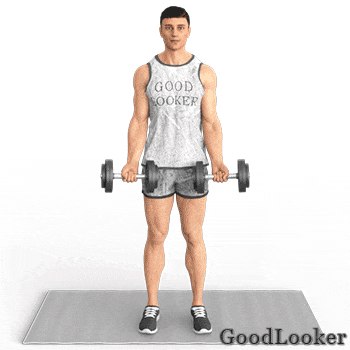
Подъем гантелей на бицепс
Поочередно поднимай гантели к плечам, разворачивая кисти наружу в верхней точке.
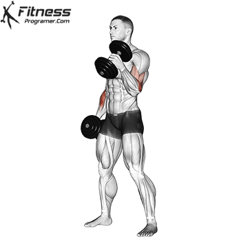
Молотковые сгибания
Поднимай гантели удерживая хват нейтральным (ладони смотрят друг на друга). Прорабатывает брахиалис.
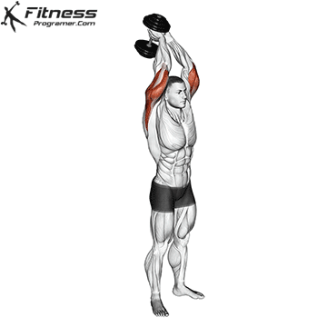
Разгибания из-за головы
Держи гантель обеими руками над головой. Плавно опускай её за спину, удерживая локти неподвижно.
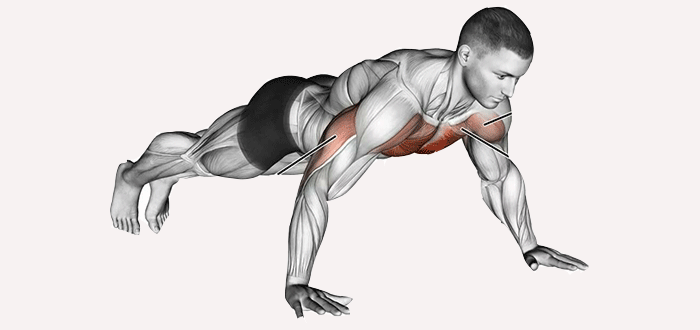
Отжимания от пола
Классическое упражнение. Держи тело ровно, опускайся до касания пола грудью.
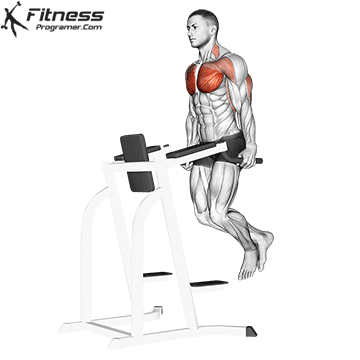
Отжимания на брусьях
Наклоняй корпус слегка вперед при спуске, чтобы акцентировать нагрузку на нижнюю часть грудных мышц.
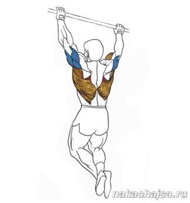
Подтягивания на турнике
Тянись грудью к перекладине. Контролируй опускание вниз, плавно растягивая мышцы спины.
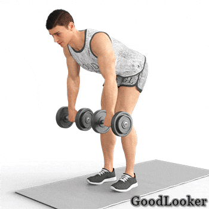
Тяга гантелей в наклоне
Наклони корпус, держи спину ровно. Тяни гантели к поясу за счет сведения лопаток, а не силы рук.
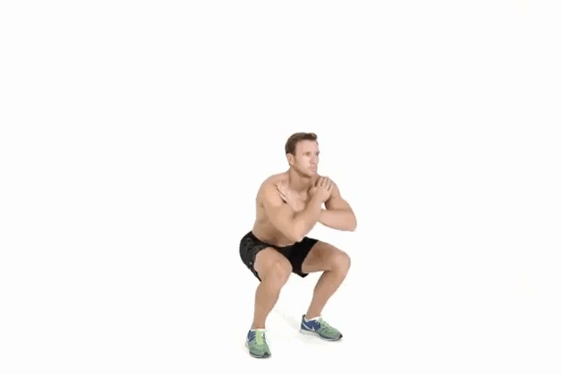
Приседания (базовые)
Опускай таз до параллели с полом. Следи, чтобы пятки не отрывались, а колени не уходили внутрь.
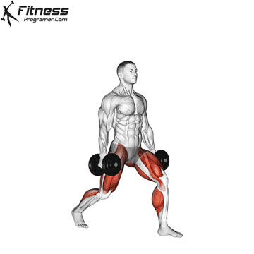
Выпады с гантелями
Делай широкий шаг вперед. Опускайся вертикально вниз, чтобы колено впереди стоящей ноги не выходило за носок.
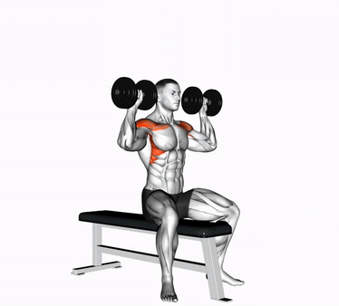
Жим гантелей сидя
Базовое упражнение на средний и передний пучок дельт. Выжимай гантели вертикально вверх над головой.
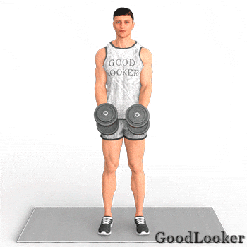
Махи гантелями в стороны
Изолированное движение для акцента на среднюю дельту. Поднимай локти до параллели с полом.
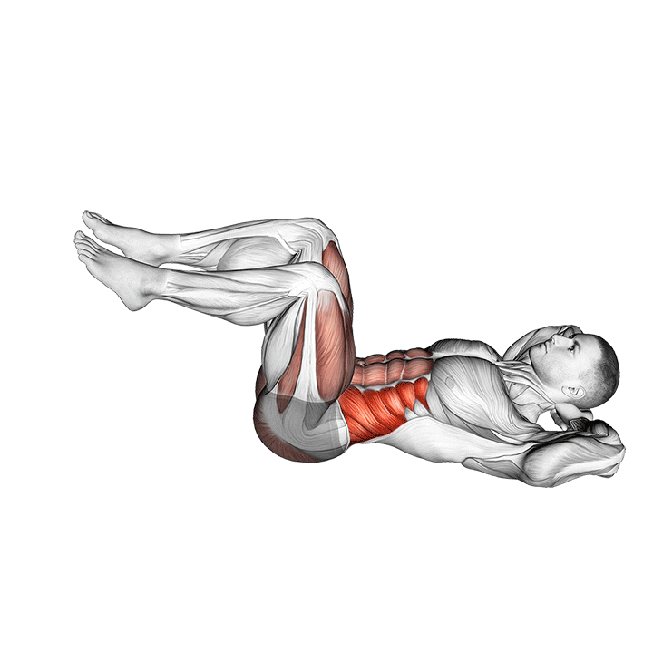
Скручивания на полу
Классическое движение на прямой мышцы живота. Скручивай корпус, прижимая поясницу плотно к полу.
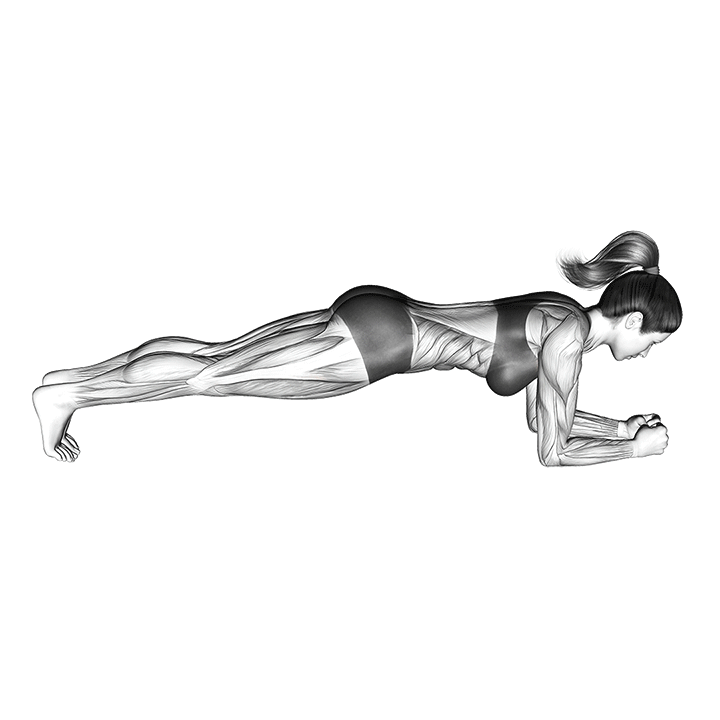
Классическая планка
Статическое упражнение для укрепления глубоких мышц кора. Держи тело в одну ровную линию без прогибов.